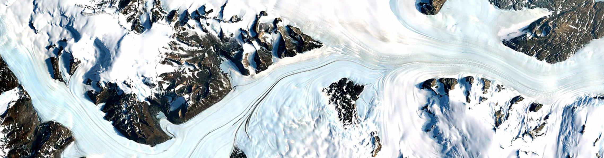

Meet Earth Engine
Google Earth Engine combines a multi-petabyte catalog of satellite imagery and geospatial datasets with planetary-scale analysis capabilities and makes it available for scientists, researchers, and developers to detect changes, map trends, and quantify differences on the Earth's surface.
Global-Scale Insight
Explore our interactive timelapse viewer to travel back in time and see how the world has changed over the past twenty-nine years. Timelapse is one example of how Earth Engine can help gain insight into petabyte-scale datasets.
Ready-To-Use Datasets
The public data archive includes more than thirty years of historical imagery and scientific datasets, updated and expanded daily. It contains over two petabytes of geospatial data instantly available for analysis.